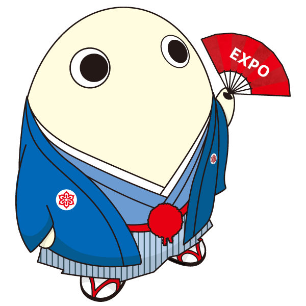

EXPO KYOTO Official site
本文の保存版（2026-11-22）
出典URL：https://www.pref.kyoto.jp/expokyoto/?_ly_r=1&yj_r=1
EXPO KYOTO Official site
ホンマの京都、見に来ておくれやす。 一緒につくろう、京都の未来 〜伝統と革新で拓く〜
イベント情報バナー京都スタンプEXPO 京都スタンプEXPO
万博のカケラを探せ★ 万博のカケラを探せ★
多目的エリアイベント配布カード 多目的エリアイベント配布カード
京都ゾーン
WHAT’S NEW 新着情報 新着情報一覧へ
新着情報一覧へ
SPOTLIGHT & EVENT REPORTS特集・イベントレポート
酒吞百鬼夜行展
万博で大人気だった鬼たちが再び参上！「酒吞百鬼夜行展」の見どころを紹介（10/21～12/7）
府域交流ツアー
京都北部の魅力を堪能するEXPO KYOTO MEETING府域交流ツアーを実施しました！
KYOTO FOOD EXPO 「食」イベント
KYOTO FOOD EXPO 「食」イベントを開催しました！（10/5～6）
KYOTO FOOD EXPO 「酒」イベント
KYOTO FOOD EXPO 「酒」イベントを開催しました！（10/3～4）
In focus注目のイベント情報
注目のイベント情報をご案内します。
京都府の注目イベント
機運醸成・その他 | その他
アフター万博企画～万博のカケラを探せ★～
2026年2月2日 ~ 2026年3月16日
万博関連
機運醸成・その他 | 機運醸成
京都スタンプEXPO
2025年10月31日～2026年3月27日
万博関連
文化 | アート
観光・体験 | その他
第13回京都・大学ミュージアム連携スタンプラリー
2025年8月30日 ~ 2026年3月16日
京都市
文化 | アート
観光・体験 | ナイトコンテンツ
LIGHT CYCLES KYOTO
2025年5月24日 ~ 2026年3月31日
京都市
万博会場でのイベント
機運醸成・その他 | 機運醸成
ICHI-ZA KYOTO
2025年4月13日 ~ 2025年10月13日
万博関連
文化 | その他
文化 | 伝統芸能
関西パビリオン多目的エリア【春】MEET UP KYOTO きょうと大集合
2025年4月29日 ~ 2025年5月4日
万博関連
お茶 | 飲む・食べる
食 | お酒
関西パビリオン多目的エリア【秋】KYOTO FOOD EXPO
2025年10月1日 ~ 2025年10月6日
万博関連
健康・矯正・教育・人権等 | 子ども／教育
EXPO KYOTO MEETING～和のこころと地球の未来～
2025年4月23日
万博関連

京都府広報監
まゆまろ
大阪・関西万博公式キャラクター
ミャクミャク
©Expo 2025
京都市広報キャラクター
京乃つかさ
©CITY OF KYOTO
2021
FLAGSHIP ACTIONフラッグシップアクション
フラッグシップアクション
京都のさまざまな団体が手を取り合って進める11の取組「フラッグシップアクション」。お茶や食、音楽や川巡り、マンガ・アニメなど、さまざまテーマのイベントが、京都の各地で開催されます。
ABOUT US大阪・関西万博きょうと推進委員会とは
大阪・関西万博を契機として京都の魅力を世界に発信し、府内各地に人や投資を呼び込むことで経済の活性化や地域振興につなげることを目的とした、行政や経済界、関係団体の長及び有識者等のオール京都の推進組織です。
KANSAI PAVILION KYOTO ZONE 関西パビリオン京都ゾーン
関西パビリオン京都ゾーン
万博会場内に、関西広域連合による「関西パビリオン」が建設され、その中に京都ブースが設置されます。
コンセプト
- 国家の枠組みを超えて、人と人とが集い、語り、新しい関係が構築される場所
- 川や水のように形を変えながら、府域とつながり、京都に訪れたくなる場所
京都ブースでは、京都へのゲートウェイとして、「文化・環境」「産業」「観光」「食」「いのち」の各分野をテーマにした企画を一定期間ごとに展開します。
SNSソーシャルネットワーク
- Facebook Facebook
- X X (Twitter)
- Instagram Instagram
- YouTube YouTube
RELATED関連サイト
地図で使用する画像
- まゆまろの画像
https://www.pref.kyoto.jp/expokyoto/common/img/top_mayumaro.png - まゆまろの画像（予備）
https://prtimes.jp/i/5484/48/origin/d5484-48-370937-2.jpg